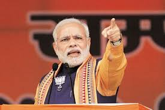
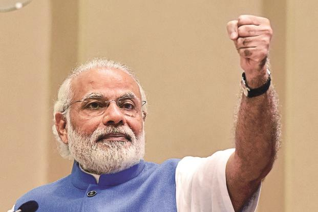
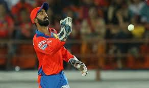
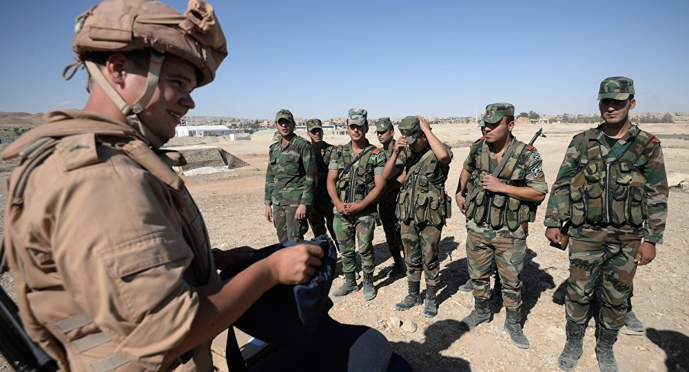
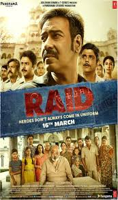
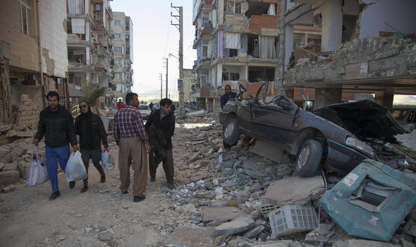
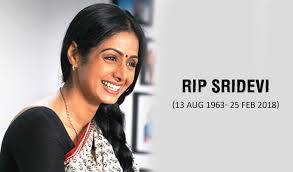
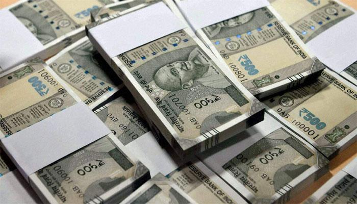
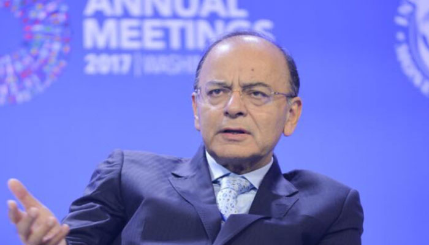

News About World

Narendra Modi is the 14th Prime Minister of India. ... He entered the BJP in 1987 and became the national secretary of the party in 1998. ... In 2001, he was made the chief minister of Gujarat and in 2013, was made the BJP's PM candidate - a move that initially did not go down well with ...
Youth of India can take the nation to greater heights: PM Modi. From being 'no one', BJP has 'won' today: PM Modi. Statement by PM at Joint Press Meet with Vietnamese President. Every Indian is proud of the rich diversity the country has: PM Modi. Every section of society is unhappy with the Congress ..

Youth of India can take the nation to greater heights: PM Modi. From being 'no one', BJP has 'won' today: PM Modi. Statement by PM at Joint Press Meet with Vietnamese President. Every Indian is proud of the rich diversity the country has: PM Modi. Every section of society is unhappy with the Congress ..
Kolkata Knight Riders Indian Premier League (IPL) 2018 captain announcement here. Dinesh Karthik was named the captain of Kolkata Knight Riders for 2018 Indian Premier League (IPL) on Sunday. ... Dinesh Karthik was appointed the new captain of Kolkata Knight Riders ...

Dinesh Karthik was appointed the new captain of Kolkata Knight Riders ahead of the 11th edition of the Indian Premier League, the franchise announced on Sunday. Karthik was one of the front-runners to lead the side after the franchise decided to let go of their most successful captain Gautam Gambhir, who will be a part of Delhi Daredevils for the upcoming season. Robin Uthappa was named the vice-captain of KKR. Get highlights of Kolkata Knight Riders Indian Premier League (IPL) 2018 captain announcement here.
Residents are reported to be fleeing the rebel-held Eastern Ghouta enclave in Syria as the situation there was described as "beyond critical". Syria's military appears to be advancing on several fronts as it tries to retake the enclave just to the east of the capital, Damascus

Syria's military appears to be increasing pressure on several fronts to try to retake the enclave just to the east of the capital, Damascus.
Government forces have taken 10% of the area, Syrian Observatory for Human Rights monitors say.
A UN aid convoy planned for Sunday has not been able to enter the enclave.The UN said it had failed to obtain permission from Syrian officials for 40 trucks carrying humanitarian supplies for the key town of Douma.
Set in the early 1980s with Lucknow as the background, the film revolves around a true incident of the longest raid in history. The movie is slated to release on March 16, 2018. Ajay Devgn set to impress fans with 'Raid'

Divided into two parts, the upper half of the poster features Ajay Devgn with his team, while the lower half shows Saurabh Shukla, the negative lead, lounging on a bed, looking disgruntled. A large number of people, presumably the members of his on-screen family, is shown standing behind him.
January 31, 2018. Tremors In Delhi, Srinagar After 6.1 Earthquake In Afghanistan. A 6.1 magnitude earthquake struck Afghanistan today, with tremors felt in Delhi and neighbouring Haryana and Punjab. The tremors that lasted a few seconds were strongly felt in Jammu ...

A powerful earthquake of 6.8 magnitude struck parts of Pakistan and the Afghanistan-Tajikistan border in the Hindukush region. The tremors killed at least six people, reported the Press Trust of India.Strong tremors were felt in Delhi and neighbouring Gurgaon and Noida on Saturday evening when an earthquake measuring 4.1 on the Richter Scale struck Jhajjar in Haryana.
Bollywood celebrities like Sharukh Khan, Aishwarya Rai Bachchan reached the Vile Parle Seva Samaj Crematorium as Sridevi's mortal remains were brought to the location for the last rites on Wednesday. Sridevi's mortal remains, wrapped in tricolour, were given state honours and taken for cremation.

Maharashtra government accorded full state honours for the funeral of Sridev which included draping her body in the national tricolour, elaborate arrangements by the Mumbai Police and a gun salute before the cremation.
In terms of sheer numbers, Sridevi's funeral is estimated to have attracted the highest number of mourners, ranking on par with the previous biggest funeral processions of the legendary singer Mohammed Rafi (July 1980: around a million mourners), and India's first superstar Rajesh Khanna (July 2012: a little less than a million mourners)
Business Today is one of the best business magazine in India which offers you latest updates about stocks, NSE, BSE, Top Companies, Markets, Sectors, Banking, interviews and money management tips.

Public sector banks have written off loans worth Rs 516 crore owed by wilful defaulters in the first half of the current fiscal, as per the data collated by the finance ministry.In what can impact the exim trade, the Rs 12,700-crore Nirav Modi scam at Punjab National Bank has affected trade finance activities as lenders have become extra cautious, while the premium on Indian paper has shot up by 10-50 bps, say bankers.
A single rate of GST in India "can't work at the moment" due to vast disparities in the country's society, he said while replying to queries from the audience at the India-Korea Summit here.

The next stage of reforms will start once India becomes a significant tax compliant society, Jaitley said.
"After we are able to improve the compliance levels the other stage of reform will begin.
"For example, we have two standard rates and in the long run I do see them merging into one. For that to happen it will take some reasonable time that is when the compliance levels start moving up,"said the Minister.; On the compliance burden of the GST, Jaitley said it was a little heavy but the process would ease on account of the initiatives being undertaken by the revenue department.
Jaguars killed for fangs to supply growing Chinese medicine trade. Demand from Chinese workers raises demand for skin and body parts of endangered species. Published: 2:00 AM. Jaguars killed for fangs to supply growing Chinese medicine trade
Local people find out that Chinese construction workers have an interest in buying animal bones, horns and body parts for their supposed medical ... More than 100 jaguars – a species whose numbers are dwindling – may have been killed in less than a year to supply a trade in their body parts with China.
the world's best (and sometimes worst) hardware, apps, and much more. From top companies like Google and Apple to tiny startups vying for your attention, Verge Tech has the latest in what matters in technology daily.
Nest products won’t be sold by Amazon.com any longer once current stock runs out, according to a report from Business Insider. Amazon last year declined to offer some of Nest’s newer products like the Nest Cam IQ and latest-generation smart thermostat. After weeks of simply ignoring the products and being unresponsive to Nest, Amazon informed the company of its decision by phone late in the year and said the directive “came from the top,” something Nest took to mean it had been handed down by CEO Jeff Bezos.
Reliance Jio Infocomm Limited (RJIL), a subsidiary of Reliance Industries Limited (RIL), India's largest private sector company, is the first telecom operator to hold pan India Unified License. This license authorises RJIL to provide all telecommunication services except Global Mobile Personal Communication by Satellite ...
RJIL holds spectrum in1800 MHz (across 14 circles) and 2300 MHz (across 22 circles) capable of offering fourth generation (4G) wireless services. RJIL plans to provide seamless 4G services using FDD-LTE on 1800 MHz and TDD-LTE on 2300 MHz through an integrated ecosystemRJIL is also deploying an enhanced packet core network to create futuristic high capacity infrastructure to handle huge demand for data and voice. In addition to high speed data, the 4G network will provide voice services from / to non-RJIL networks.